The Accept-Reject Method: Anthony Gusman, Nicholas Sullivan
Contents
Introduction
The process of generating pseudo random numbers using a given density function of a random variable is easy if the inverse of the CDF is known or quick to find. However, the general method breaks down when there does not exist a happy way to find the inverse of the CDF. This is why we will be exploring something called the Acceptance-Rejection Method.
Overview of Method
The Acceptance-Rejection Method is actually quite simple. We implement the method with our acceptReject function as described in plain English below:
- Given a probability density function (PDF)
 of a random variable 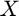 with compact support find its maximum over its range (call it
of a random variable 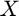 with compact support find its maximum over its range (call it  ).
). - Generate a pair of random numbers
 such that 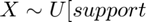 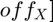 and 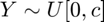.
such that 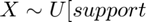 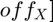 and 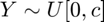. - For each point if 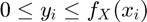 then it is "accepted" otherwise it is "rejected."
As you can see this is essentially the same process used in Monte-Carlo integration.
The Functions
We provide three functions in this paper, acceptReject.m, acceptRejectPlot.m and randPDF.m with the following outputs and arguments:
[A,varargout] = acceptReject(fun,a,b,n,varargin)
- Output: numerical array A containing the accepted X-values (i.e., the values of the random variable with density function f).
- Input: fun, PDF function
- a, lower bound of fun's domain
- b, upper bound of fun's domain
- n, number of pairs (increase this for higher accuracy)
- The optional input string 'plot' returns a histogram comparing the produced values with the actual user-specified density.
acceptRejectPlot(fun,a,b,Xc,Yc)
- Output: plots, one of the pdf with a histogram of the accepted values generated and one of the pdf along with accepted and rejected points.
- Input: fun, PDF function
- a, lower bound of fun's domain
- b, upper bound of fun's domain
- X, the X returned by acceptReject
- Y, the Y returned by acceptReject Note: This will have little use aside from its call by acceptReject.m
[x] = randPDF( fun, a, b, n)
- Output: a 1xn vector of random values with density provided by fun
- Input: fun, PDF function
- a, lower bound of fun's domain
- b, upper bound of fun's domain
Accept Reject and Plotter function code
here is the full code of all functions with comments and syntax high lighting:
acceptReject.m
function [A,varargout] = acceptReject(fun,a,b,n,varargin) % ACCEPTREJECT Produces random variables with accept/reject method. % % Examples: % f = @(x) 6 * x.^2 .* (1-x).^2; % A = acceptReject(f, -1, 1, 1e4); % % This takes function f, left and right endpoints a = -1, b = 1 % with n = 1e4 trials; returns numerical array A containing the % accepted X-values (i.e., the values of the random variable with % density function f). % ------------------------------------------------------------------ % % f = @(x) 6 * x.^2 .* (1-x).^2; % [A,Xc,Yc] = acceptReject(f, -1, 1, 1e4); % % The optional output arguments Xc and Yc return cell arrays: % The first rows Xc{1,:} and Yc{1,:} contain the accepted x- and % y-values, respectively. The second rows Xc{2,:} and Yc{2,:} contain % the rejected values. % ------------------------------------------------------------------ % % A = acceptReject(f, -1, 1, 1e4,'plot'); % % The optional input string 'plot' returns a histogram comparing the % produced values with the actual user-specified density. % Scale density function to appropriate size. I = integral(fun,a,b); f = @(x) (1/I)*fun(x); c = max([f(a),f(b),f(fminbnd(@(x) -f(x),a,b))]); % locate maximum M = @(x) c + (x-x); % Initialize random variables for n trials. T = (b-a)*rand(1,n)+a; % x-value uniform distribution on S U = rand(1,n); % y-scale factor uniform distribution % Test criteria. TEST = [ U .* M(T) <= f(T) ]; % logic array (0 if reject, 1 if accept) Xc = {T(TEST); ... % row 1 <- accepted X values T(~TEST)}; % row 2 <- rejected X values Yc = {U(TEST).*c; ... % row 1 <- accepted Y values U(~TEST).*c}; % row 2 <- rejected Y values A = Xc{1,:}; % accepted X values as num array % Report accepted/rejected data if requested. varargout{1} = Xc; varargout{2} = Yc; %%%%%%%%%%%%%%%%%%%%%%%%%%%%%%%%%%% % Optional Routines if ~isempty(varargin) switch varargin{1} case 'plot' % Plotting routine acceptRejectPlot(fun,a,b,Xc,Yc) end end
acceptRejectPlot.m
function acceptRejectPlot(fun,a,b,Xc,Yc) % ACCEPTREJECTPLOT Plots results from acceptReject. % % Example: % f = @(x) 6 * x.^2 .* (1-x).^2; % [A,Xc,Yc] = acceptReject(f,-1,1,1e4); % % acceptRejectPlot(f, -1, 1, Xc, Yc); % % This plots the approximate density using the histogram of Xc and % the actual density f. A second plot contains some sample % accept/reject points. % Recover data I = integral(fun,a,b); f = @(x) (1/I)*fun(x); X = Xc{1,:}; notX = Xc{2,:}; n = length(X) + length(notX); nACCEPT = length(X); % count how many we accepted (stats) pACCEPT = nACCEPT/n; % percentage accepted (stats) % Plotting x = linspace(a,b,200); % domain for actual density % Plot some sample accept/reject points. figure(1) hold on nEnd = min([.5e4,length(Xc{1,:})]); nEnd2 = min([.5e4,length(Xc{2,:})]); plot(Xc{1,:}(1:nEnd),Yc{1,:}(1:nEnd),'b+') plot(Xc{2,:}(1:nEnd2),Yc{2,:}(1:nEnd2),'rx') plot(x,f(x),'k--','LineWidth',2); % plot actual density xlabel('x'); ylabel('f(x)'); title('Sample Points'); % Plot the approximate and actual density. figure(2) m = 50; % number of bins EDGES = linspace(a,b,m); % define bins for histogram FREQ = histc(X,EDGES); % report frequency in each bin A = nACCEPT*(b-a)/(m-1); % 'area' of histogram approx = bar(EDGES,FREQ/A,'histc'); % plot approximate density hold on plot(x,f(x),'r--','LineWidth',2); % plot actual density xlabel('x'); ylabel('f(x)'); title('Accept/Reject Method'); set(approx,'FaceColor',[1 1 1],'LineWidth',2);
randPDF.m
function [x] = randPDF( fun, a, b, n) %Generate 1 x n a vectorof random numbers following the distribution of a %Given PDF. % Output: % x: 1 x n vector of random numbers following the distribution of fun % Input: % fun: a PDF function with compact support over [a,b] % a: the lower bound for the support of fun % b: the upper bound for the support of fun % n: the desired number of random values x = zeros(1,n); % placeholder for generated numbers filled = 0; % keeping track of the accepted values % find ratio of area beneather pdf to box size I = integral(fun,a,b); f = @(x) (1/I)*fun(x); c = max([f(a),f(b),f(fminbnd(@(x) -f(x),a,b))]); % locate maximum boxsize = ceil(c*(b-a)); filled = 1; oldfill = 1; x = zeros(1,n); while filled < n A = acceptReject(f,a,b, ((n - filled)*boxsize)); oldfill = filled; filled = filled + length(A); if filled <= n x(1,oldfill:filled-1) = A; else x(1,oldfill:n) = A(1:n-oldfill+1); end end
Example of the inside work with the Beta Density
Lets take a look at how these functions work using the beta density with a = 6 and b = 2
setting up a, b and beta(u)
a = 6; b = 2; beta = @(u) gamma(a+b)/(gamma(a)*gamma(b)) * u.^(a-1) .* (1-u).^(b-1);
Plotting to see the pdf
x = linspace(0,1,1000); figure hold on title('The Beta Density with a = 6, b = 2') plot(x,beta(x)) xlabel('u') ylabel('f(u)') hold off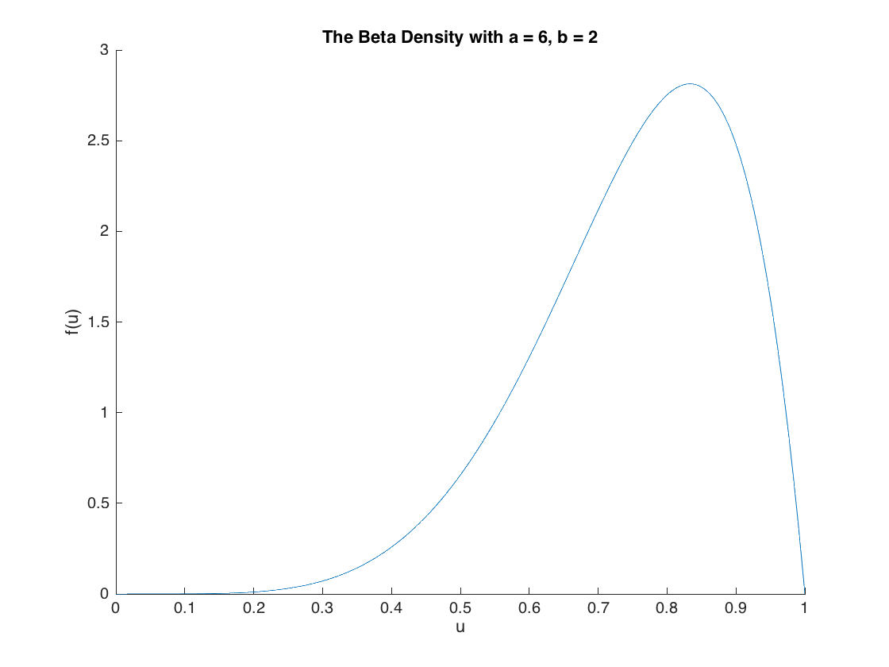
Now lets test out the functions for 10,000 points
[A] = acceptReject(beta,0,1,10000,'plot');
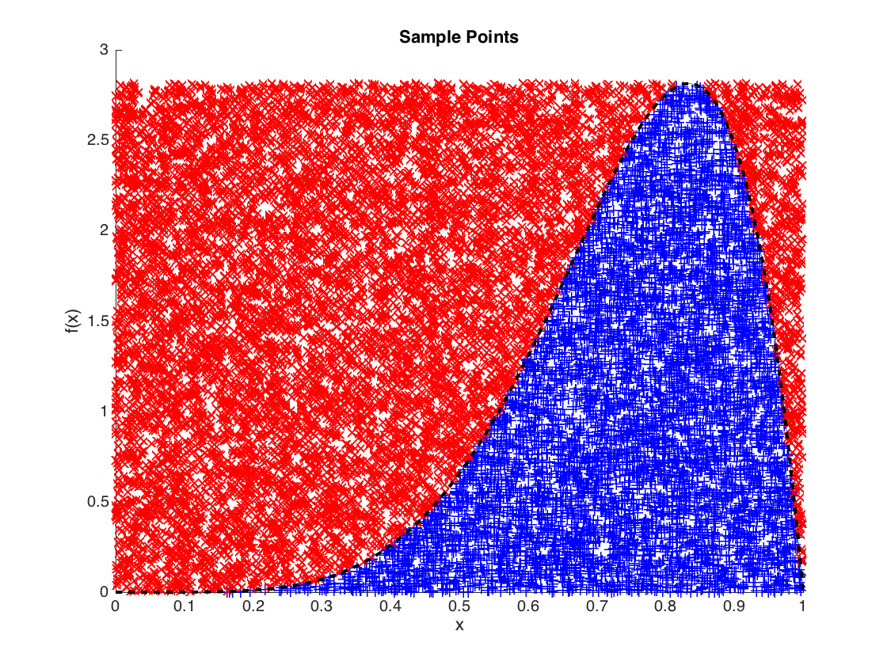 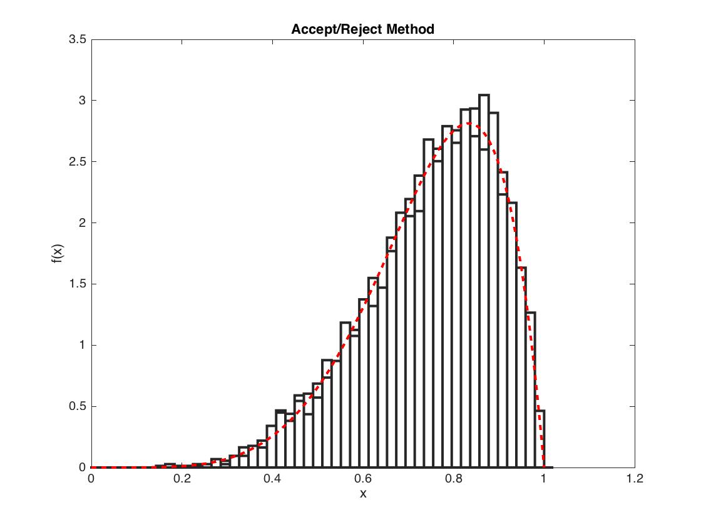 Example 10000 points with density of the Beta distribution
All random number generators out there work in the following manner, a type of random number is chosen via which rand function is used (rand, randi, ...) and then the user specifies how they want that data returned, a vector, a single random number or a matrix.
randPDF works much in the same manner, though with slightly limmited functionality at this time. given a function a range and a number of points to be returned randPDF generates that number of points required from the density given.
lets try it out using the beta density above and grabbing 10000 points.
n = 10000; x = randPDF(beta, 0, 1, n); figure hold on title('histogram of 10000 points generated from a beta density') histogram(x,50) hold off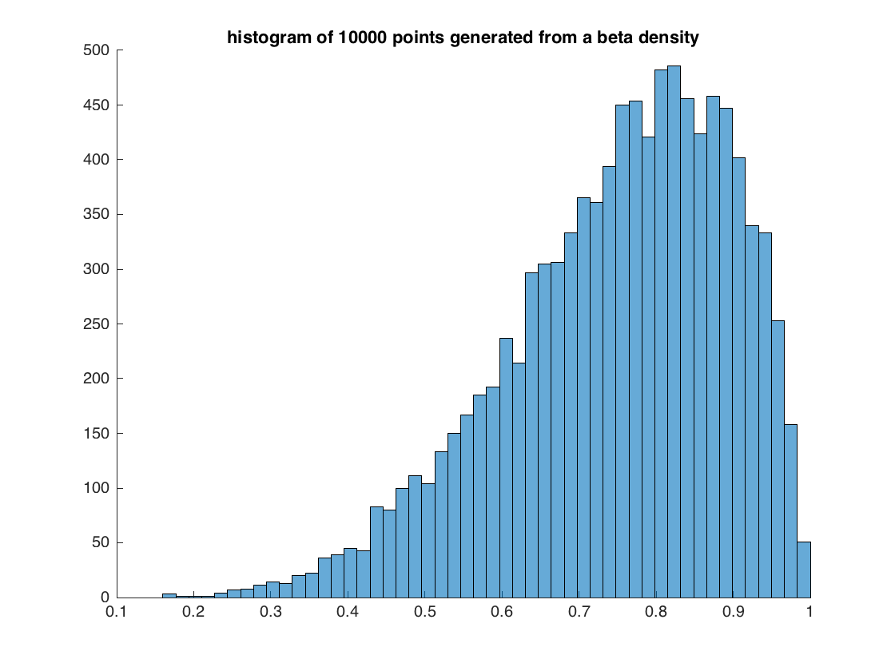